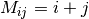

The indices of the elements stored in the local matrix.
This can be used to easily build up distributed matrices that depend on their co-ordinates.
| Parameters: | full : boolean, optional
|
|---|---|
| Returns: | im : tuple of ndarrays
|
Notes
As an example a DistributedMatrix defined globally as  can be created by:
>>> dm = DistributedMatrix(100, 100)
>>> rows, cols = dm.indices()
>>> dm.local_array[:] = rows + cols